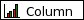
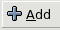

3.10.1A Simple Graphing Example
This section will introduce the process of creating a graph by presenting an example of a side-by-side column plot.
3.10.1.1Data for the examples.
Because a graph requires data, it is first necessary to create some simple data to use in these examples. First we have to input these data into a worksheet. The data used are shown in Figure 3-3. For clarity in this discussion, the word "Interval" should be in cell A1.
3.10.1.2Making the Column Plot
A column plot presents a series of data points as columns whose height depends on the value of each datum. This is a useful type of plot to show the number of eggs produced in each interval.
-
The quickest way to make a plot starts with the selection of the data. Using the mouse, first select the range B1:C5 which includes the data both for the number of Eggs and for the number of Females.
-
Next, click on the graphing toolbar button
 which looks like three colored pillars. This launches a
new window called the graph guru.
which looks like three colored pillars. This launches a
new window called the graph guru.
-
Next, click on the word "Column" next to the icon with vertical colored bars  which will move the selection down to that row.
-
Click on the "Ok" button. This will make the druid disappear and leave the mouse cursor as a thin crosshair.
-
Finally, we will place and size the graph on a sheet. Click on the sheet and drag downward and to the right. As the mouse is dragged, a rectangle will expand. When the mouse button is released, a simple column chart should appear.
The simple graph should look like Figure 3-4.
3.10.1.3Modifying the Simple Graph
The graph can be customized with titles, extra charts, overlaid plots, label boxes and lots of extra information. To customize the graph, right click on the plot to open the graph custom menu. The graph context menu will appear as shown in Figure 3-5.
This menu provides access to several functions. Users can customize the appearance of graphs by selecting the menu item, can save the graph into PNG or SVG formats using the menu item, can reorder the various graphical elements displayed in the worksheet using the , , , and menu items or can delete graphical elements with the menu item.
If we wanted to add a title and a legend to the graph, we could use the menu item to open the graph editor and customize the graph as follows:
-
Right click on the graph to open the context menu and select the menu item. This will open the graph editor.
-
The graph editor opens with the top-level "Graph" entry selected in the element tree displayed in the top left pane of the editor. The top right pane of the editor displays a preview of the eventual graph. The bottom pane of the editor has a single or several tabs presenting the elements which can be modified for the particular item selected in the element tree. Click and hold on the button  to open the menu of elements addable to a graph. Note that this menu changes depending on the element selected in the element tree when the is clicked. Drag the mouse cursor down until the selection highlights the "Title" entry and release the mouse button. This will add a "Title" node in the graph element tree and change the selection to this "Title" node. The bottom pane of the graph editor will also change to display the modifiable characteristics of the "Title" element.
-
In the text field of the tab displayed in the bottom pane of the graph editor, add a title such as "Egg Production and Female Productivity" and type the Enter key. Note that the title appears at the top of the graph in the preview pane.
-
In the graph tree, select the node labelled "Chart1". Next, click and hold on the add button, drag down to the menu item and release. Note that this adds a legend on the right of the graph in the preview pane.
-
Click on the "Ok" button. The plot should now have a title and a legend. Note that gnumeric has used the words in the column headers automatically to label the two data series in the legend.
The modified graph should look like Figure 3-6.